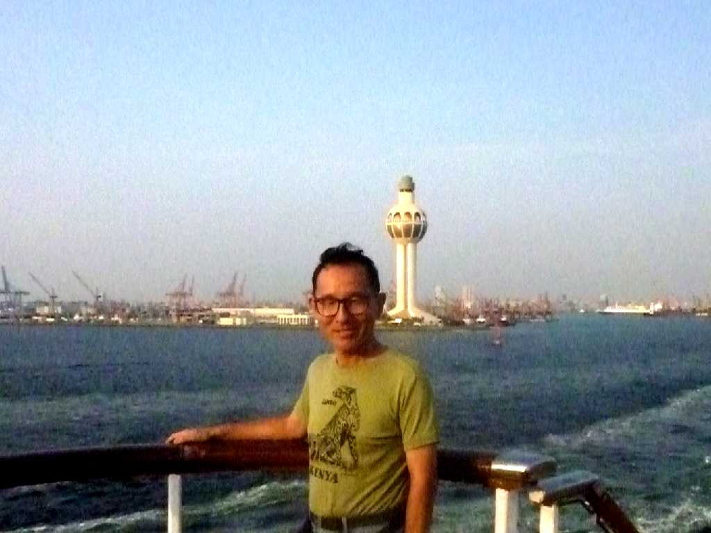

August 25 2010 Culture minister Jeddah
日本総領事館石樽総領事による サウジアラビアと日本との交流会で文化相と記念撮影

August 25 2010 SS Oceanic Jeddah Light in Jeddah Port
紅海に面した漁港であったがイスラム教の聖地メッカの海の玄関口となってからは商業都市として栄えハッジの時期には数百万人の巡礼者を受け入れる港として賑う